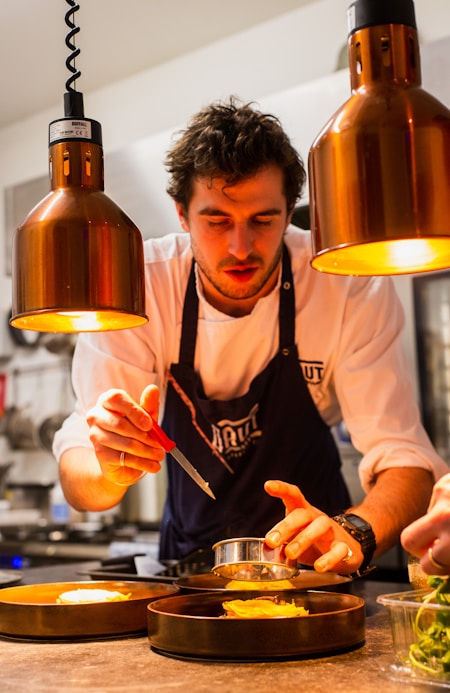
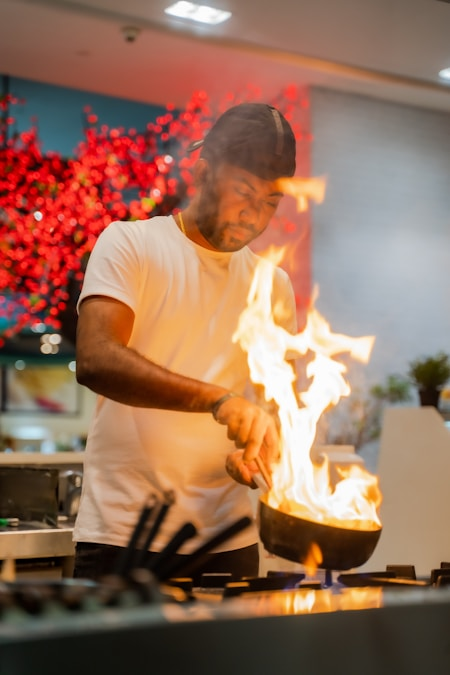
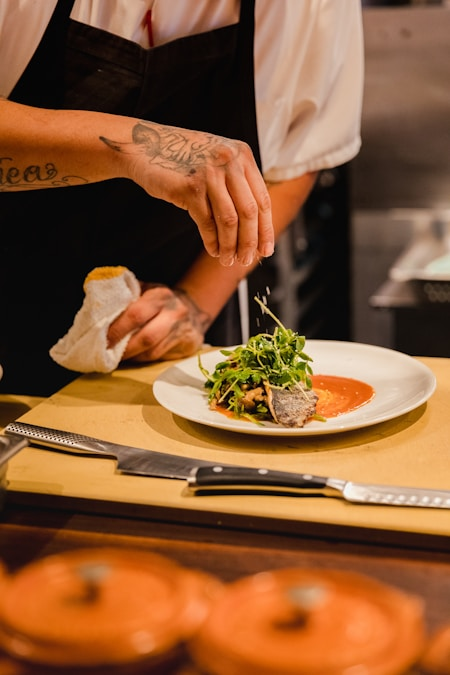
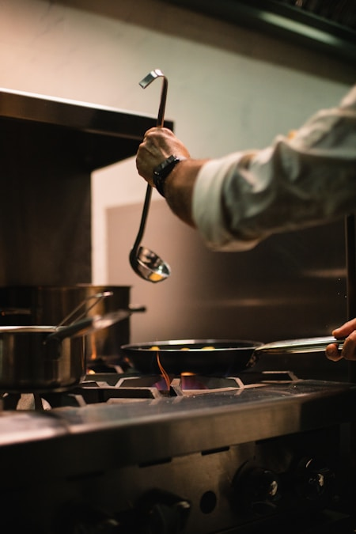

Our Story
Since 2009, Savoré has been Colombo's gathering place for people who believe a meal is more than sustenance — it is memory, culture, and connection.

Savoré opened its doors in 2009 in a converted colonial townhouse on Harvest Lane. What began as a 30-seat bistro quickly became one of Colombo's most beloved dining destinations, earning recognition from the Asia's 50 Best Restaurants list in 2017.
Our philosophy has never changed: use only what is in season, buy from farmers we know by name, and cook every dish as though it is for someone we love. The menu rotates four times a year to reflect what the land offers — never what is fashionable.
In 2022, we expanded with a terrace garden and a dedicated tasting room for private events, while keeping the soul of the original kitchen intact. Every renovation decision has been guided by one question: does this make the guest feel more at home?
Years of service
Local farm partners
Guests daily

Sous Chef

Pastry Chef

Sommelier